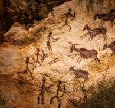

Rock art.
The history of Indian drawing art dates back to prehistoric times, with the earliest examples being rock paintings and carvings. The art has evolved over time, influenced by spirituality, sensuality, and the merging of cultures.
Indian art consists of a variety of art forms, including painting, sculpture, pottery, and textile arts such as woven silk.
Geographically, it spans the entire Indian subcontinent, including what is now India, Pakistan, Bangladesh, Sri Lanka,
Nepal, Bhutan, and at times eastern Afghanistan. A strong sense of design is characteristic of Indian art and can be
observed in its modern and traditional forms.
The origin of Indian art can be traced to prehistoric settlements in the 3rd millennium BCE. On its way to modern times,
Indian art has had cultural influences, as well as religious influences such as Hinduism, Buddhism, Jainism, Sikhism and Islam.
In spite of this complex mixture of religious traditions, generally, the prevailing artistic style at any time and place has
been shared by the major religious groups.
In historic art, sculpture in stone and metal, mainly religious, has survived the Indian climate better than other media and
provides most of the best remains. Many of the most important ancient finds that are not in carved stone come from the
surrounding, drier regions rather than India itself. Indian funeral and philosophic traditions exclude grave goods, which is
the main source of ancient art in other cultures.
Indian artist styles historically followed Indian religions out of the subcontinent, having an especially large influence in
Tibet, South East Asia and China. Indian art has itself received influences at times, especially from Central Asia and Iran,
and Europe.